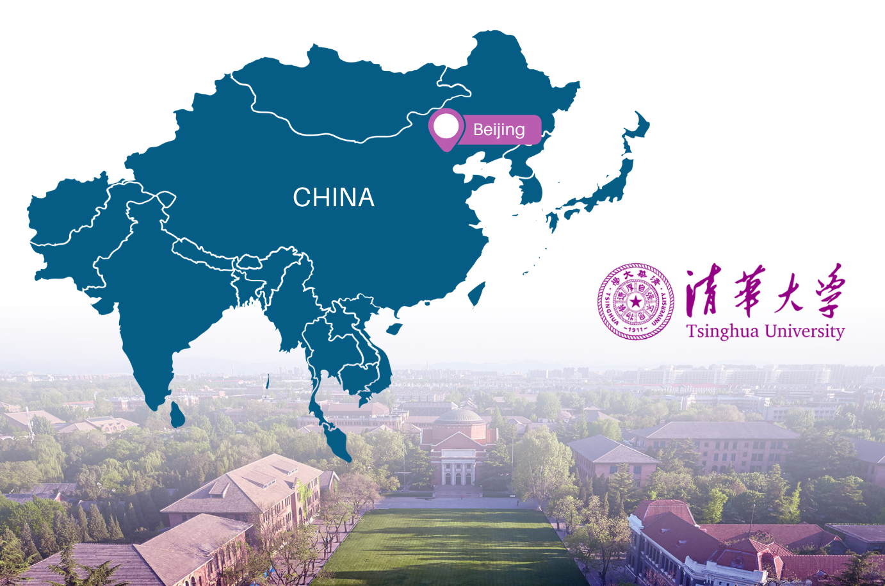
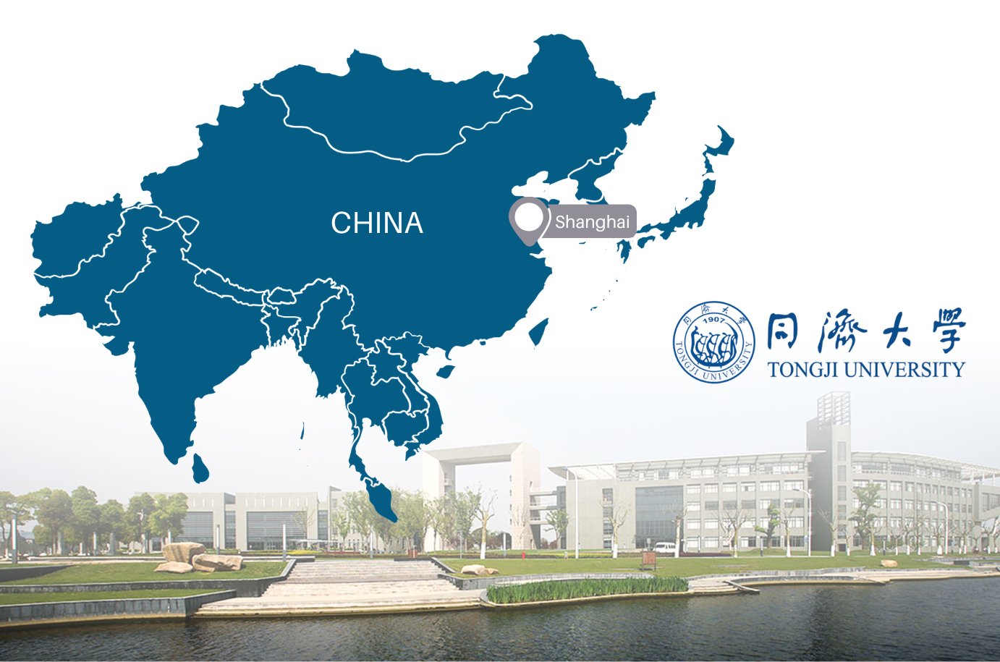
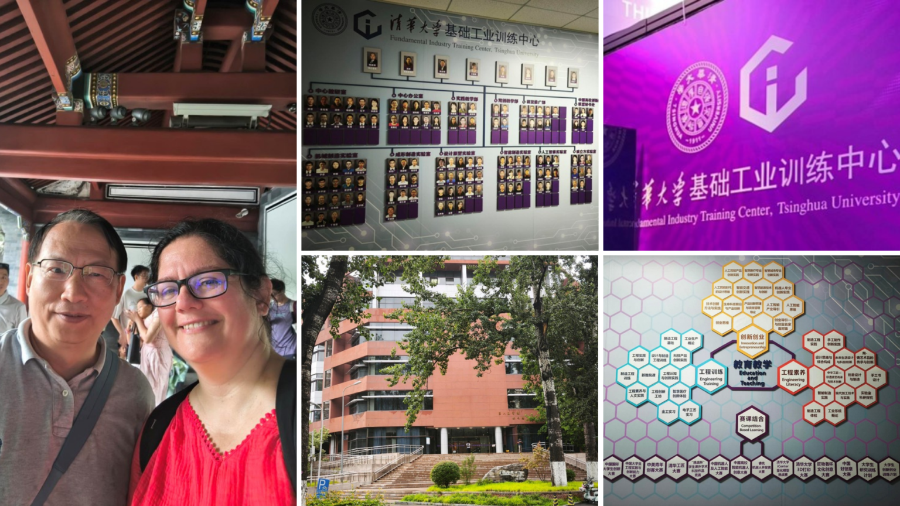
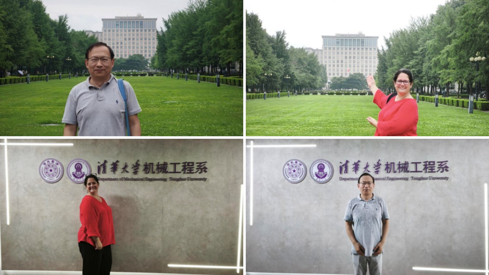
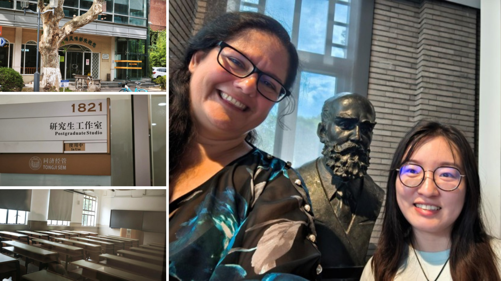
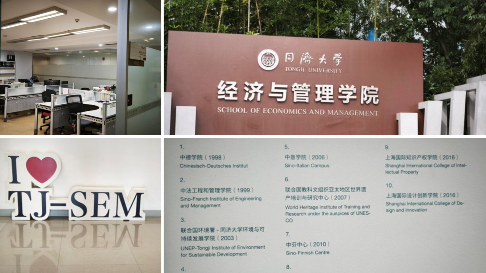
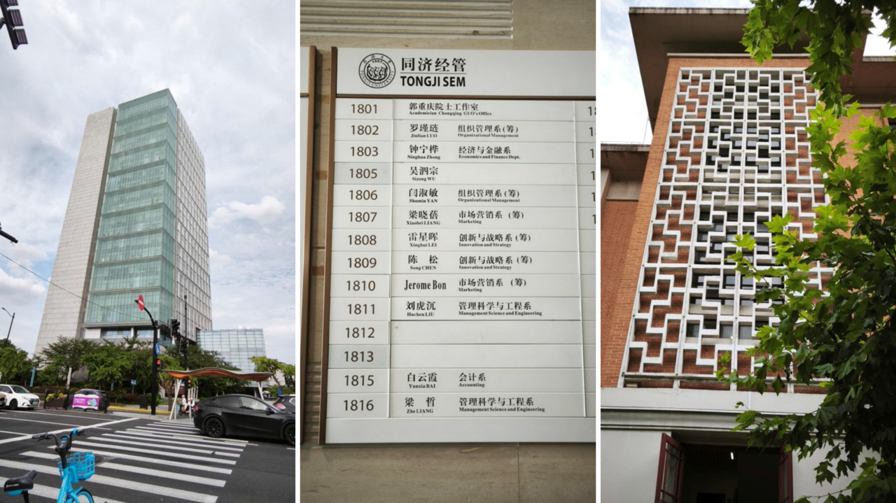

1 August 2026
Building International Partnerships through Higher Education
As part of the Erasmus+ MedIT-HuB project, the project team took part in a study visit to China between 15 and 22 July 2026. The following report by Professor Kornélia Lazányi from Wekerle International University, who serves as International Coordinator at TAM CERT and Project Coordinator of MedIT-HuB, provides an overview of the key activities and outcomes of the visit.
The programme combined university visits, participation at one of the world’s leading artificial intelligence conferences, and meetings with potential industrial partners. Throughout the visit, the focus remained on identifying collaboration opportunities in education, research and medical technologies while strengthening the international network of the MedIT-HuB project.


Day 1 – Tsinghua University, Beijing
The first day was spent at Tsinghua University, where Dr. Wei Shi (Doctor of Engineering, PhD at Tsinghua University, Associate Professor of Mechanical Engineering) served as our host and guide.

Dr. Shi introduced the current projects of the Faculty of Mechanical Engineering and presented the opportunities offered by both the university and its campus. His teaching portfolio includes courses such as Information Systems for Manufacturing Enterprises, Computer and Numerical Simulation of Mechanical Systems, Manufacturing Technology, Management Information Systems in Material Processing Enterprises, and Finite Element Analysis.
During the visit, we also had the opportunity to meet several student-led initiatives, including the Institute for AI International Governance and the Fundamental Industrial Training Centre. The students introduced their ongoing work and discussed potential opportunities for future collaboration.

Day 2 – Tongji University, Shanghai
The second day was dedicated to visiting Tongji University in Shanghai, one of the few higher education institutions in China with a long-standing and strong relationship with Europe. Established in 1907 as a German-language university, Tongji has maintained close ties with Germany throughout its history and has traditionally been a stronghold of Western medicine. Today, it is one of China’s leading engineering universities, with faculties dedicated to several European countries, including France and Italy, demonstrating its continued openness to international cooperation.

During the visit, we explored the university museum, which presents more than a century of the institution’s history, as well as several faculty buildings, lecture halls and seminar facilities. We also visited the university cafeteria and a dormitory dedicated to international students, providing valuable insight into campus life.

Particular attention was given to the Faculty of Management, one of the university’s newest faculties and the only one located outside the main campus. The faculty hosts numerous international programmes, MBA courses and summer schools, and clearly demonstrated its commitment to international collaboration. One particularly inspiring practice is that student researchers are provided with dedicated studios where they can focus entirely on their own research projects.
The visits to Tsinghua and Tongji University highlighted the strong commitment of Chinese higher education institutions to innovation, international cooperation and interdisciplinary education. They also created valuable opportunities to exchange experiences and explore future academic collaboration within the framework of the MedIT-HuB project.

Coming next in Part 2
The academic visits were only the beginning of the journey. In the second part, we will explore the World Artificial Intelligence Conference (WAIC), discover the latest AI innovations in healthcare and medical technology, and present the promising new partnerships established with international organisations and industry representatives during the visit.
The views and opinions expressed are those of the author(s) and do not necessarily reflect those of the European Union or the Tempus Public Foundation. Neither the European Union nor the granting authority can be held responsible for them.